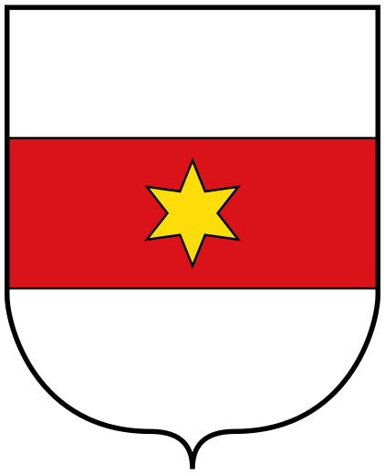
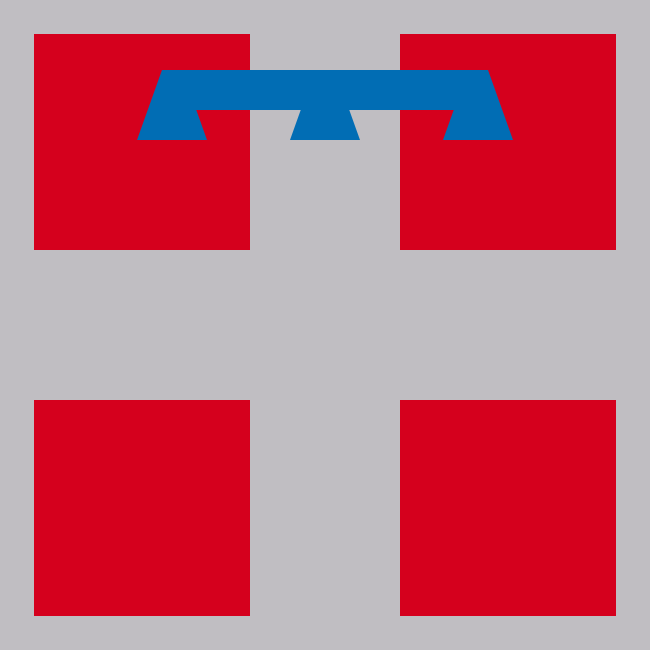

 Bolzano, capital: Bolzano
Liguria, capital: Genova
Lombardia, capital: Milano
 Piamonte, capital: Torino
 Valle dAosta, capital: Aosta
Valle dAosta, capital: AostaItalia está subdividida en 21 regiones que se agrupan en cinco grandes áreas geopolíticas usadas tradicionalmente. Cada región está dirigida por el Presidente y la Junta regional que ejercen el poder ejecutivo, y el Consejo regional que ejerce el poder legislativo. Tiene dos regiones especiales son: regiones autonomas con estatuto especial, Sardegna y Sicilia
Valle dAosta, capital: Aosta